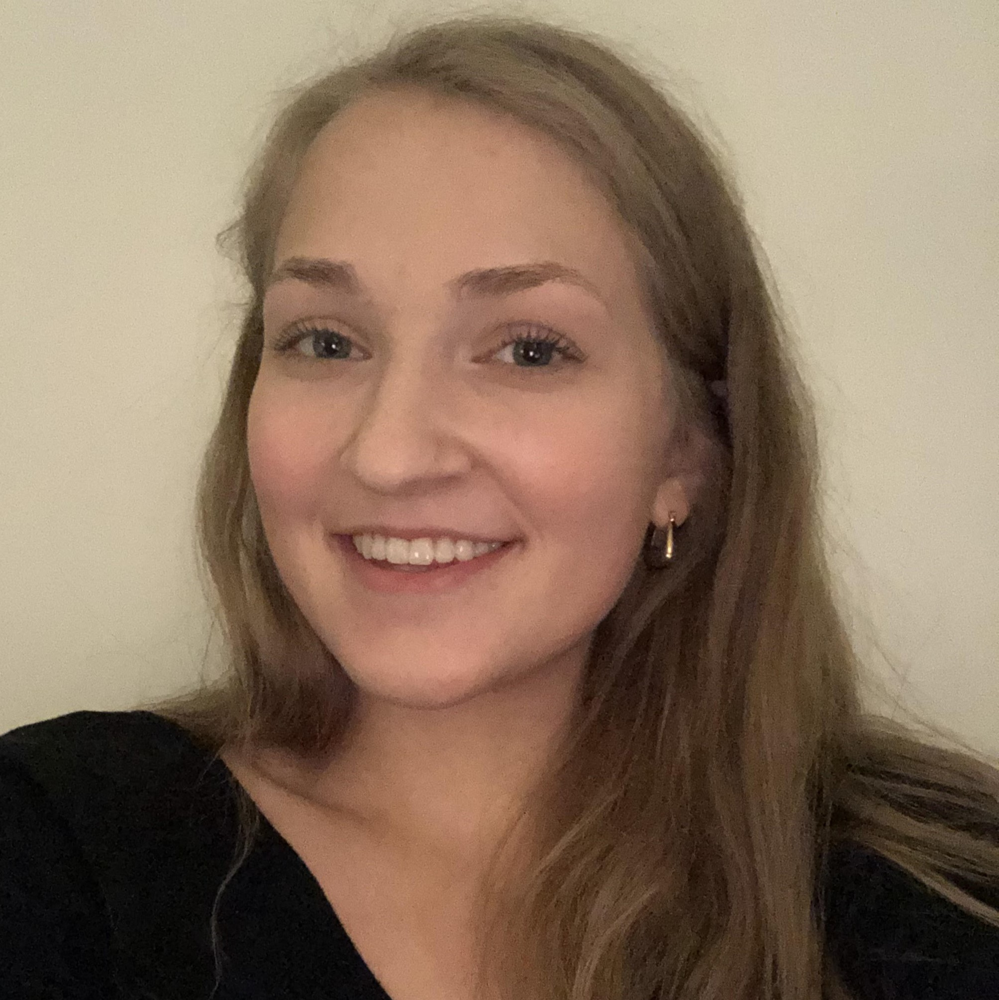

A Bit About Me!

Hello! I'm a 5th year Software Engineering student attending the University of Alberta. I'm originally from Regina, Saskatchewan
but moved to Edmonton, Alberta for university. I'm interested in music, film and cooking.
My Professional history
Intuit Canada
-
Software Developer Co-op from January 2021 - August 2021 & May 2022 - December 2022
-
Worked on full-stack team, but focused on front-end projects
-
Worked with wide software stack including Kotlin, Python, Typescript with React, etc
54e Dev Studios
-
Summer Student from May 2020 - August 2020
-
Worked on beta robotics project
-
Focused on Arduino robotics control but tested robotic components and functionality
My Skills
I am adept in many technical and soft skill areas. I have extensive experience in project coordination,
team work, conflict resolution, task flexibility, and crisis management. On the technical side I have experience
in a wide range of areas and am able to adapt easily to expectations.